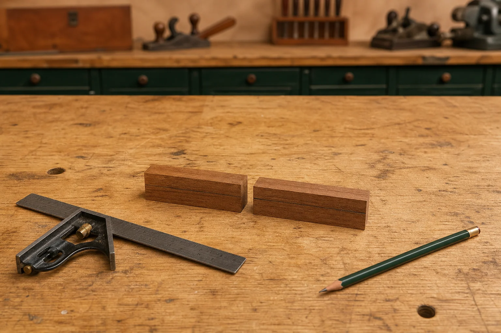
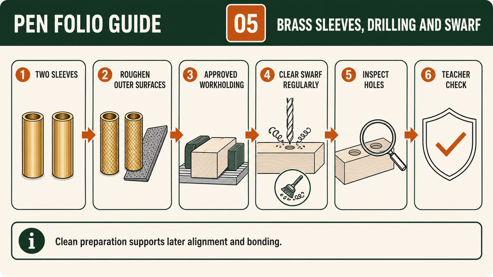
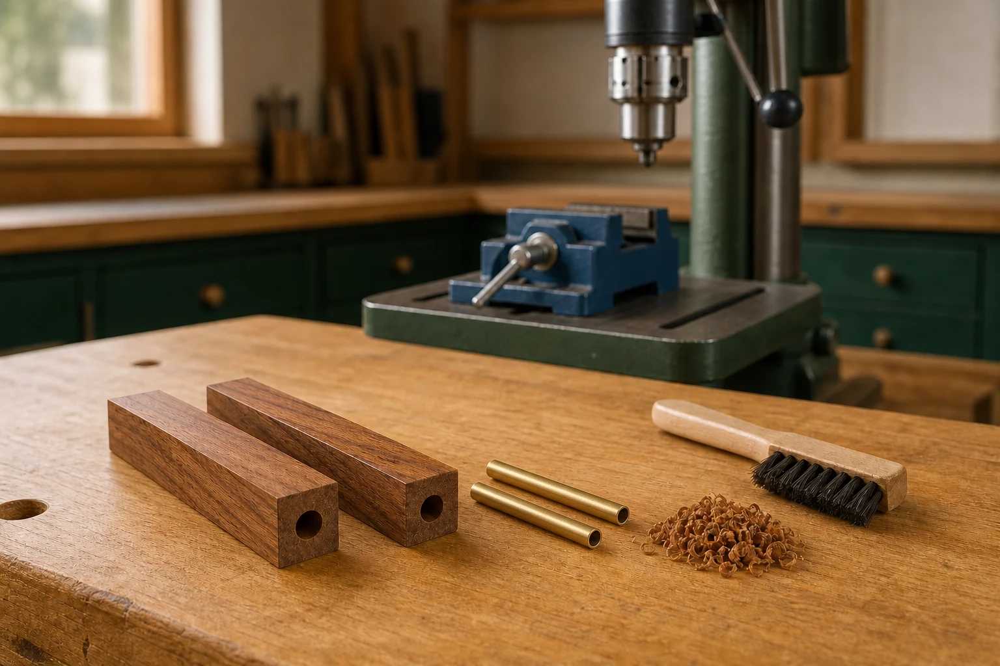

Your work
Student details
Your entries save automatically in this browser. Use Print / Save PDF before leaving the page.
Weeks 5-6
This module
Maintain reliable references, prepare the two brass sleeves and clear swarf during the teacher-approved drilling process.
Theory 1
Marking the Pen billet and preserving reliable references
Marking the Pen billet establishes the references that guide every later decision. At this stage you are not creating a set of cutting dimensions; you are creating reliable information that helps you keep parts identified and aligned. The verified requirement is to place a mark along the timber length that crosses the centre. This line records grain orientation so that, after the billet is prepared into two parts, the relationship can be restored when the parts are later placed on the approved mandrel. Treat this line as a control measure for quality, not as decoration or a guess about where material will be removed.
A clear reference mark has a purpose and must remain legible. The lengthwise centre line communicates orientation; it does not authorise any dimension or cut position. Keep the mark continuous enough to be recognised after handling, but avoid adding unnecessary lines that could cause confusion. Students should understand the difference between reference/orientation marks and dimensional information. Only written values from the approved resource, supplied kit and teacher directions can define sizes or positions. Mixing reference marks with invented dimensions creates errors that are difficult to correct later.

Preserving reliable references means protecting the original information as the billet is handled and prepared. Marks can be lost through abrasion, handling or accidental removal. Before moving to the next stage, check that the centre/grain line is still visible and corresponds across the billet. If the line is becoming unclear, pause and seek teacher guidance rather than reinterpreting it from memory. This approach prevents small uncertainties from turning into cumulative error, where each stage adds a little more inaccuracy until the final alignment is compromised.
Identification of paired parts is closely linked to the centre/grain line. Once the billet is prepared into two parts, they must be kept as a matched pair. Losing track of which pieces belong together can break the intended visual continuity even if each part is prepared carefully. Use only the approved system for identification, and keep the information simple and readable. Avoid adding labels or marks that suggest a layout, sequence or dimension that has not been confirmed by the approved source. The aim is to maintain a clear relationship between the two parts without introducing new, unverified information.
Checking against written sources is essential at this stage. Compare your marking with the approved process resource and confirm that it matches the stated requirement: a line along the length crossing the centre that indicates grain orientation. Do not rely on memory, a peer’s work or an image from a different kit. If there is any uncertainty, stop and ask for a teacher check. This checkpoint ensures that your references are correct before they are carried into later stages, where mistakes are harder to identify and correct.
Your folio should show how marking supported accuracy and control. Record the billet with the centre/grain line and explain its purpose in your own words. Link this evidence to your cutting list by showing that you used verified information rather than guessed dimensions. Later evidence should show that the same reference was preserved and used to align the paired parts. By connecting these stages, you demonstrate that reliable marking reduces cumulative error, supports correct identification and contributes to the final visual quality of the Pen.
- Place a clear lengthwise mark crossing the centre to indicate grain orientation.
- Distinguish reference/orientation marks from any dimensional information.
- Keep marks legible and check them before progressing to the next stage.
- Maintain identification of paired parts without adding unverified labels.
- Confirm markings against the approved resource and seek teacher approval when unsure.
Theory 2
Preparing the two brass sleeves for the approved Pen kit
The approved Pen kit contains two brass sleeves that must be identified and prepared carefully before the bonding stage. The verified process begins by removing the two sleeves from the plastic kit bag and confirming that they belong to the supplied kit. Although the parts may appear simple, their preparation affects the quality and reliability of later work. Students should treat the kit bag and its contents as one matched set, keep the sleeves together, and avoid mixing them with parts from another student’s project or a different kit. Accurate identification prevents confusion and protects the connection between the approved resource, the supplied materials and the finished Pen.
The outer surfaces of the two brass sleeves are roughened to improve bonding. Roughening changes the smooth outer surface so the teacher-approved bonding product can make more effective contact with it. The purpose is controlled surface preparation, not unnecessary removal of material or alteration of the sleeve’s shape. Students should follow the exact method demonstrated by the teacher and avoid guessing an abrasive, pressure or technique. The supplied kit information, product instructions, school procedures and teacher directions control this stage. A method seen online or used with another kit may not suit the materials, product or workshop controls approved for this Pen project.
Cleanliness matters because contamination can interfere with bonding. Dirt, oil, loose residue or repeated handling of a prepared surface may reduce the quality of contact between materials. Students should therefore organise the workspace, handle the sleeves as directed and protect the prepared outer surfaces until the approved bonding stage. Cleanliness does not mean applying an unapproved cleaner or product. Any cleaning material or method must come from the teacher demonstration, product information and school controls. The important principle is that a surface should be suitably prepared and kept in an approved condition rather than being touched, contaminated or left among workshop waste.

Surface preparation should be complete but controlled. Both brass sleeves need their outer surfaces prepared consistently enough to support bonding, while their form and identity must remain unchanged. A rushed approach may leave smooth areas, while excessive or uneven preparation may damage the surface or create an unreliable result. Students should inspect the full visible outer surface and compare it with the teacher’s approved example or quality expectation. They should not invent a numerical standard, tolerance or abrasive specification. If the preparation appears uneven, damaged or uncertain, the correct response is to stop and request a teacher check before any bonding product is used.
The bonding product and process are controlled by the supplied kit information, the product label and Safety Data Sheet, the teacher demonstration and the school SOP or SWMS. Students must not choose a product based on familiarity, appearance or advice from another project. The approved information determines how the product is handled, what task-specific controls are required and when the work may progress. PPE is only one part of those controls and does not replace good organisation, ventilation, safe handling, teacher approval or correct waste management. Students should understand the purpose of the bonding stage while leaving all exact practical details to the authorised local procedure.
Progressive folio evidence should demonstrate that the two sleeves were identified, prepared and checked as parts of the approved Pen kit. Useful evidence may include a clear image of the two sleeves after controlled surface preparation, accompanied by a caption explaining that the outer surfaces were roughened to improve bonding. The caption should also record the relevant teacher checkpoint and any quality concern that was corrected before progressing. Avoid claiming that preparation was successful simply because the stage was completed. Strong evidence identifies what was checked, why the check mattered and how the condition of the sleeves supported the later quality of the Pen.
- Remove and identify the two brass sleeves from the supplied plastic kit bag.
- Keep both sleeves paired with the approved Pen kit and separate from other projects.
- Roughen the complete outer surfaces only by the teacher-approved method.
- Protect prepared surfaces from contamination and unnecessary handling.
- Obtain a teacher quality check before following the approved bonding process.
Theory 3
Drilling clean Pen blank holes and clearing swarf
Drilling the Pen blank creates the internal holes required for the approved kit, so this stage affects both safety and later product quality. The goal is a straight, clean and kit-matched result produced through the teacher-approved local method. Students must not select a bit, setup or procedure from memory or from another Pen kit. The exact requirements come from the supplied kit information, teacher demonstration and local SOP or SWMS. Before work begins, the teacher must authorise the setup and confirm that the timber, approved workholding and required controls are suitable for the task.
Swarf is the loose timber material produced as the drill bit removes material from the blank. It may appear as chips, shavings or fine particles depending on the timber and the approved process. The verified resource states that the drill bit is cleared of swarf regularly. This matters because accumulated swarf can interfere with chip clearance, increase friction and make it harder to judge whether the drilling process is continuing normally. Clearing swarf is therefore a planned quality and risk control, not an optional clean-up activity completed only after the hole has been formed.

Friction produces heat when the bit, timber and trapped swarf remain in contact. Excessive heat or restricted chip movement may affect the timber, the drilling result or the condition of the equipment. Students are not expected to invent a clearing interval or machine response. Instead, they follow the demonstrated process, observe the work carefully and stop at the approved check points. Signs such as an unexpected change in movement, sound, resistance, smell or equipment condition must be reported to the teacher. Continuing when the process appears abnormal replaces evidence-based judgement with guesswork and may increase both risk and damage.
Secure approved workholding is essential because the Pen blank must remain controlled and correctly positioned during the teacher-approved drilling process. Holding the timber casually or relying on hand pressure would not provide a reliable basis for a straight, clean hole. The teacher determines the approved workholding arrangement and confirms it during the pre-start check. Students should also ensure that the blank is correctly identified and that its orientation references remain understandable. A secure and organised setup supports accuracy, protects the reference system and reduces the chance that movement will affect the relationship between the two prepared Pen parts.
Hole quality directly affects later sleeve bonding and alignment. A clean, correctly directed kit-matched hole provides the intended surface and pathway for the approved brass sleeve process. A hole that is damaged, obstructed or poorly aligned may make later stages less reliable and can affect how the paired Pen bodies correspond. Students must not invent a fit, tolerance or correction method when checking the result. They should inspect the hole according to the approved quality criteria, remove loose swarf only as demonstrated, and obtain teacher approval before progressing to the teacher-approved bonding stage.
Folio evidence should show both the planned controls and the quality checks actually completed. A useful record may identify teacher authorisation, approved workholding, regular swarf clearance and the condition of the completed holes. Captions should explain why these controls mattered rather than simply stating that drilling occurred. Record any stop-and-check decision honestly, including what was observed, who was consulted and whether the work was approved to continue. This progressive evidence links safe decision-making to product quality by showing how careful drilling supported sleeve bonding, grain alignment and the later manufacture of the Pen.
- Use only the kit-matched bit, setup and drilling procedure approved by the teacher.
- Confirm secure approved workholding and teacher authorisation before beginning.
- Clear the drill bit of swarf regularly as required by the approved process.
- Stop and report unexpected movement, resistance, heat indicators or equipment condition.
- Check hole cleanliness and alignment before progressing to sleeve bonding.
Guided practice
Weeks 5-6 knowledge checks
Choose an answer, check it and use the progressive hints and feedback to improve.
Apply your learning
Scaffolded written responses
Write first, use the feedback prompts, then compare your reasoning with the model response.
Finish the two-week block
Save your evidence
Your work saves in this browser, but browser storage is not the official submission. Save the completed page as a PDF before changing devices or clearing browser data.
No marks, answers or personal information are sent from this webpage.